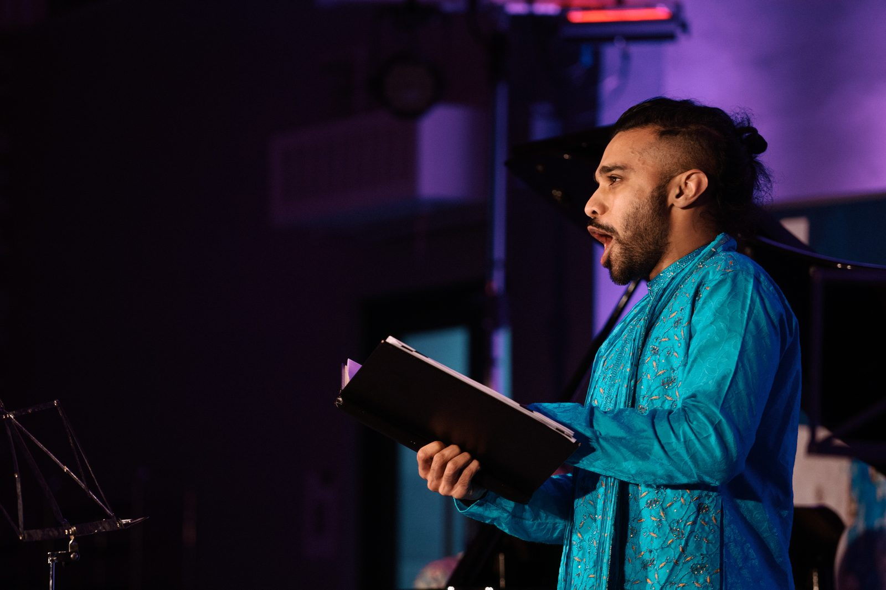

Voice · Stagecraft · Life on Tour
Conversations and essays on vocal technique, movement, and what it actually takes to sustain an operatic voice over a career — plus dispatches from the road.

A working conversation on tongue-root release, the old "air-lock" of lotta vocale, Melocchi's affondo, and why a released voice and a released body turn out to be the same problem — grounded in the Metodo 3 Punti and a few unfashionable corners of vocal and movement pedagogy.
On life as a touring singer, why intimate, stripped-down opera can hit harder than the big house, and what over a decade with Barefoot Opera has taught me about bringing an audience into the room with you.